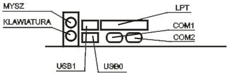

Jednostka centralna
Płyta główna | Procesor |
pamięć wewnętrzna | pamięć zewnętrzna |
karty rozszerzeń | obudowa
Płyta główna
Podstawowe parametry płyty głównej:
- rodzaj zamontowanego Chipsetu;
- dla procesorów firmy Intel;
- dla procesor AMD;
- rodzaj zamontowanego układu BIOS (Award, Ami, Phoenix);
- częstotliwość zegara magistarali systemowej (zewnętrzna)(FSB);
- pamięć Cache - obecnie montowana wewnątrz procesora;
- rodzaj gniazda dla poszczególnych procesorów (Solt/Socket);
-
ilość gniazd modułów pamięci RAM oraz maksymalna ilość pamięci możliwej
zainstalowania w systemie;
-
ilość wolnych gniazd dla kart rozszerzających (ISA, PCI, Dual PCI, AGP,
PCI Express x1, Express x16);
- max. częstotliwość taktowania procesora;
- złącza IDE, Serial ATA;
-
porty i złącza: COM, LPT, USB 1.1, USB 2.0, IEEE 1394 (Inaczej Firewire,
iLink), SCSI.
Tab.1. Gniazda umieszczone z tyłu komputera:
| PS/2 |
Gniazdo klawiatury i myszy. |
| COM 1, COM 2 |
Złącza szeregowe. |
| LPT 1 |
Złącze równoległe. |
| USB |
Uniwersalna szyna danych - możliwe podłączenie każdedgo urządzenia
wysposażonego w to złącze.
|

Rys.1. Rozmieszczenie gniazd wej/wyj z tyłu komputera.
Procesor
Rodzaje procesorów:
- Intel: Pentium III, Pentium IV, Celeron, Celeron II;
- AMD: Atlon, Duron, Athlon XP +, Athlon 64;
Podstawowe parametry procesorów:
- zwenętrzna częstotliwość taktowania procesora (FSB);
-
wewnętrzna częstotliwość taktowania procesora (zazwyczaj jest to
pomnożona zwenętrzna częstotliwość pracy, np. Pentium III 667 - cz.zewn.
to 133 MHz, wewnętrzna 667 MHz = 5* 133 MHz) - częstotliwość, z jaką
pracuje jądro procesora;
- ilość pamięci Cache L1 i L2;
-
zestaw dostępnych rozkazów (oprócz standardowych dodatkowo MMX, SSE,
3D-NOW);
- rodzaj zastosowanej obudowy i wyprowadzeń.
Najważniejsze elementy procesora:
- CPU - Cantral Procesor Unit (całośc);
-
ALU - Arithmetic Logic Unit (główna jednostka wykonawcza, moduł
arytmetyczno-logiczny);
-
FPU - Floating Point Unit (jednostka zmiennoprzecinkowa, koprocesor
arytmetyczny);
-
SIMD - Single Instruction Multiple Data (wykonywannie tej samej
instrukcji na wielu danych jednocześnie);
- Cache L1, L2 - szybka pamięc wewnętrzna.
Pamięć wewnętrzna
RAM - pamięc operacyjna (robocza) komputera.
Rodzaje najczęsciej stosowanej pamięci RAM:
-
SRAM - statyczna pamięć RAM (nie wymaga odświeżania); pamięć bardzo
szybka, ale również bardzo kosztowana; stosowana na pamięć Cache;
-
DRAM - dynamicznna pamięć RAM (co pewien czas trzeba w nniej odświeżać
innformacje) - moduły FPM i SIMM;
-
SDRAM - pamięć DRAM wyposażona w interfejs synchroniczny; dzięki temu
wewnętrzne sygnały taktujące generowane są na podstawie zegara
systemowego (moduły DIMM);
-
DDR SDRAM - (Daouble Data Rate SDRAM) - sygnał przesyłany jest na obydwu
zboczach sygnały zegarowego, co podwaja prędkość działania tych pamięci;
- RDRAM (Rambus Direct RAM) - bardzo szybka pamięc RAM.
ROM - Pamięć stała, tylko do odczytywania.
Informacja jest przechowywana stale nie ulega zniszczeniu ani zmianie.
Pojemność taj pamięci jest zazywczaj ograniczona. Przechowuje się w niej
informacje o systemie operacyjnym niezbędne do podjęcia pracy po
wyłączeniu zasilania. Pamięć ROM nie może być modyfikowana, można z niej
tylko odczytywać dane. Z tego też względu służą do przechowywania
kluczowych informacji jak np. konfiguracja BIOS'u czy modemu.
Pamięć zwenętrzna (pamięć masowa)
Służy do przechowywania dużych ilości danych;
Przykłady:
-
stacje dyskietek (FDD - Flopy Disc Drive) - służy do zapisu i odczytu
dysków elastycznych o odpowiedniej pojemności (360kB; 720kB; 1,2MB;
1,44MB);
-
dyski twarde (HDD - Hard Disc Drive) - urządzenie służące do zapisu i
odczytu gromadzonych informacji; pojemność mierzy się odpowiednio w MG i
GB; dyski twarde są podstawowym naśnikiem danych w komputerze;
umieszczone są zwykle na stałe w obudowie komputera; składają się z
kilku lub kilkunastu płaskich, okrągłych dysków, których powierzchnie
służą do przechowywania informacji.
-
napęd CD-ROM - napęd służący tylko do odczytu dysków CD, CD-R, CD-RW,
CD-Audio itd.; pojemność standardowej płyty CD wynosi 650MB (dziś
700MB);
-
napęd DVD-ROM - napęd służący tylko do odczytu dysków DVD-ROM, możliwe
jest na nim również odtwarzanie płyt CD.
Karty rozszerzeń
Karty umożliwiające rozszerzenie podstawowych funkcji komputera o kolejne,
wzbogacające jego działanie.
Przykłady:
-
Karta graficzna - karta rozszerzeń, umiejscawiana na płycie głównej
poprzez gniazdo AGP ( coraz rzadziej PCI, wyłącznie w bardzo starych
modelach ISA); odpowiada w komputerze za obraz wyświetlany przez
monitor; karty graficzne różnią się miedzy sobą szybkością pracy,
wielkością pamięci RAM, wyświetlaną rozdzielczością obrazu, liczbą
dostępnych kolorów oraz częstotliwością odświeżania obrazu; karta
graficzna składa się z czterech podstawowoych elementów: płytki
drukowanej, głównego procesora, pamięci wiedo i układu RAMDAC (który
często jest zintegrowany z procesorem w jednej obudowie);
- karta dźwiękowa - umożliwa odważanie dźwięków przez komputer;
-
modem - pozwala na dołączenie komputera z siecią Internet poprzez
stacjonarną linię telefoniczną;
-
karta sieciowa - umożliwia połączenie komputera z innym komputerem lub z
siecią komputerową.
Obudowa komputera
Jest jak gdyby skóra komputera. W jej wnętrzu umieszczana jest jednostka
centralna wraz z kartami rozszerzeń. Rodzaj obudowy może zadecydować o
rodzaju płyty głównej umieszczonej wewnątrz niej, a co za tym idzie
również o innych parametrach komputera ( rodzaj procesora, ilość pamięci,
czy karta rozszerzeń). Rozmieszczenie elementów na płycie głównej jest
standaryzowane (np. ATX).